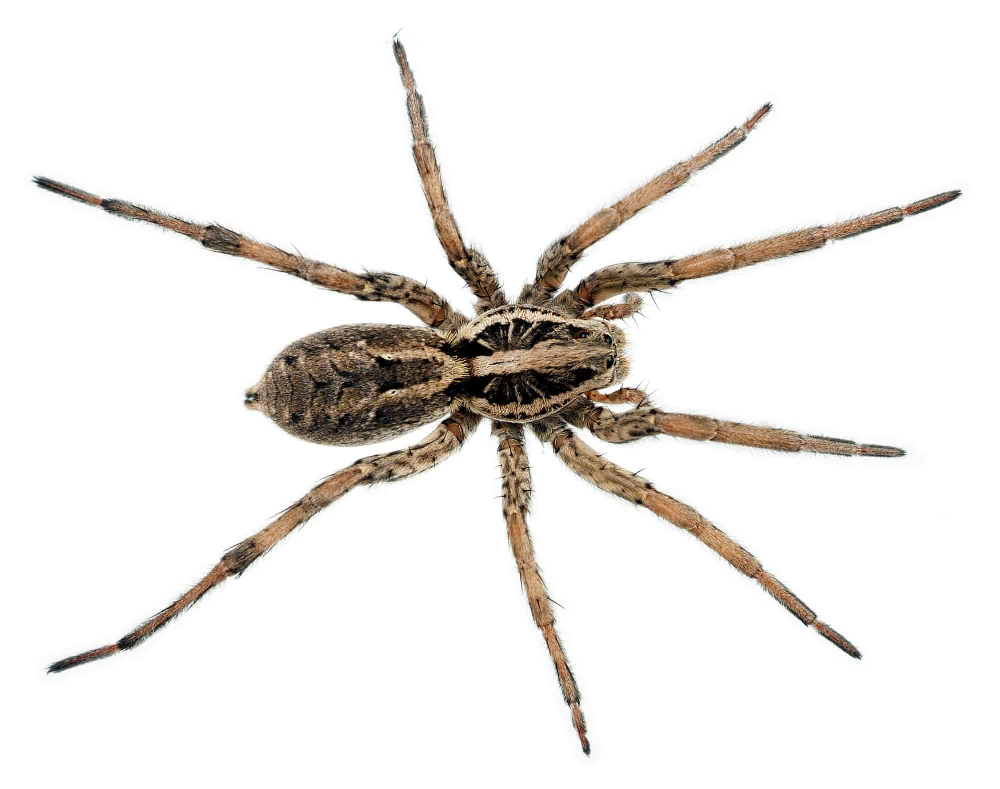

Spider

Spiders are arachnids that belong to the class Arachnida and the order Araneae. They are known for their characteristic eight legs and ability to produce silk.
There are over 48,000 known species of spiders found worldwide, inhabiting diverse habitats such as forests, deserts, and even underwater environments.
Spiders are predators that primarily feed on insects and other small arthropods. They use their venomous fangs to inject venom into their prey, paralyzing or killing them.
Some species of spiders, like the orb-weaving spiders, create intricate webs to capture their prey, while others, like hunting spiders, rely on their keen senses to actively hunt down their prey.